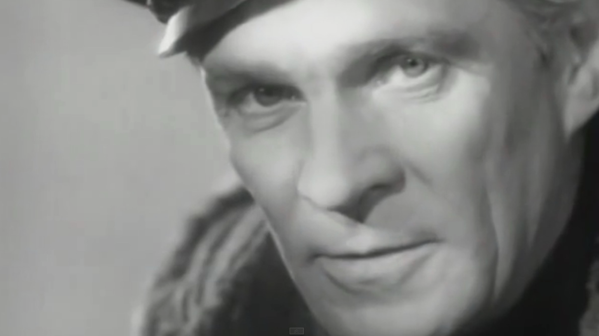

Boris Barnet
Why do we care about Boris Barnet? (with reference to Secret Agent, 1947)

Fig.1. Boris Barnet
1. Making ideology palatable through everyday detail. This is how good propaganda works.
In Secret Agent, Barnet encodes pro-Soviet identity through domestic and cultural markers rather than slogans. The pro-Soviet Ukrainian is shown within a stable household that includes children, signaling continuity and moral legitimacy; he wears a traditional vyshyvanka shirt, and his home features a bust of Taras Shevchenko. These details align Soviet loyalty with Ukrainian national culture and family values.
2. Visual storytelling as political coding
Barnet’s mise-en-scène distinguishes allies from enemies: the pro-Soviet Ukrainian appears in well-lit, orderly interiors filled with meaningful cultural symbols, while opponents are framed in darker, unstable spaces. Crucially, these opponents are not only marked as “other” but are explicitly associated with pro-Nazi alignment.
The film’s ideological framing is reinforced by its screenwriter, Isidor Makliarsky, an NKVD officer involved in anti-Ukrainian operations, whose background contributes to a narrative that legitimizes Soviet power while equating alternative Ukrainian positions with collaborationist (pro-Nazi) forces.
3. The film is an example of the Soviet agent film with all its differences from the Western (above all British) spy film.